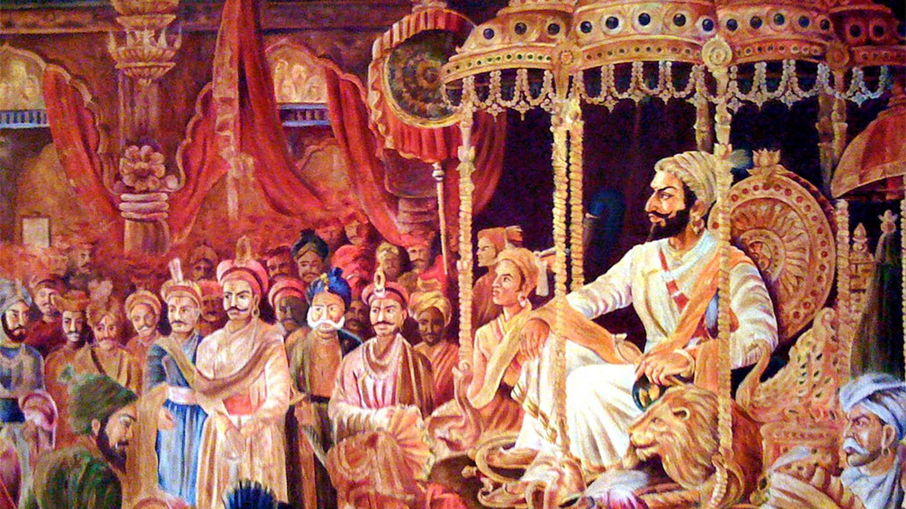

CORONATION

Shivaji had acquired extensive lands and wealth through his campaigns, but lacking a formal title, he was still technically a Mughal zamindar or
the son of a Bijapuri jagirdar, with no legal basis to rule his de facto domain. A kingly title could address this and also prevent any challenges
by other Maratha leaders, to whom he was technically equal it would also provide the Hindu Marathas with a fellow Hindu sovereign in a region
otherwise ruled by Muslims.
The preparation for the proposed coronation began in 1673. However, some controversial problems delayed the coronation by almost a year. Controversy
erupted amongst the Brahmins of Shivaji's court: they refused to crown Shivaji as a king because that status was reserved for those of the kshatriya
(warrior) varna in Hindu society.[97] Shivaji was descended from a line of headmen of farming villages, and the Brahmins accordingly categorised him
as being of the shudra (cultivator) varna.[98][99] They noted that Shivaji had never had a sacred thread ceremony, and did not wear the thread, which
a kshatriya would.[98] Shivaji summoned Gaga Bhatt, a pandit of Varanasi, who stated that he had found a genealogy proving that Shivaji was descended
from the Sisodia Rajputs, and thus indeed a kshatriya, albeit one in need of the ceremonies befitting his rank.[100] To enforce this status,
Shivaji was given a sacred thread ceremony, and remarried his spouses under the Vedic rites expected of a kshatriya.However, following historical
evidence, Shivaji's claim to Rajput, and specifically Sisodia ancestry may be interpreted as being anything from tenuous at best, to inventive
in a more extreme reading.[